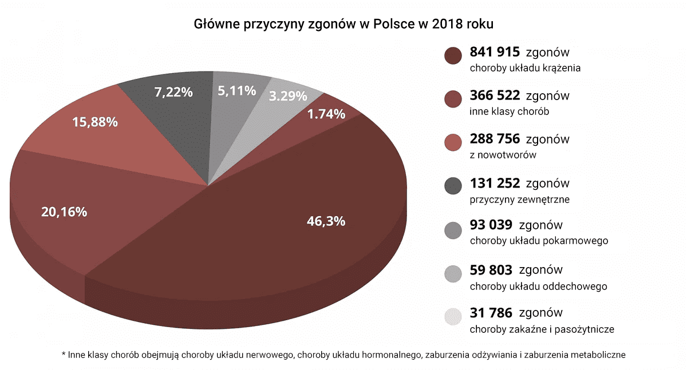
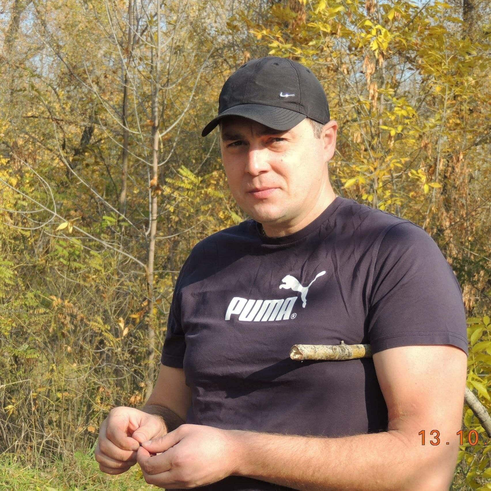

Szokująca prawda: 16 razy więcej ludzi umiera na nadciśnienie i choroby serca niż podczas pandemii. Po co ukrywać środek, które całkowicie łagodzi nadciśnienie?
Skandal wydarzył się w programie poświęconym światu pandemii, ekspert wyrwał mikrofon i zaczął mówić o zupełnie innym problemie – że zdobywając emitowane informacje o wirusie, przymykamy oczy na problem, który co roku zabija 1,5 miliona ludzi w Polsce. Mówimy o chorobach układu sercowo-naczyniowego. Dlaczego ukrywają fakt, że istnieje już środek, który całkowicie łagodzi nadciśnienie?
Choroby sercowo-naczyniowe są światowym liderem wśród chorób pod względem liczby zgonów. 94% zawałów serca i udarów mózgu występuje właśnie z powodu wysokiego ciśnienia krwi. W 89% przypadków nadciśnienie z zawałem serca i udarem kończy się śmiercią. Konkretnie, nadciśnienie jest odpowiedzialne za około 77-78% „naturalnych” zgonów. W liczbach bezwzględnych jest to około 1,54 miliona zgonów w przeszłości w 2019 r.
„Ludzie umierają nie z powodu wirusa, ale z powodu zużytego serca i naczyń krwionośnych! Pamiętaj o tym raz na zawsze!” - zapewniał jeden z zaproszonych ekspertów Michał Galicki , ale inni uczestnicy dosłownie próbowali go uciszyć.
Statystyki są szokujące! Epidemia pochłonęła 11 tys. istnień, a prawie 20 razy więcej Polaków w tym samym czasie zmarło z powodu problemów z układem krążenia.
W studiu zaczęło się zamieszanie. Eksperci - przedstawiciele Ministerstwa Zdrowia i Kultury oraz lekarze z polskich klinik zdrowia zaczęli się kłócić, przerywając sobie nawzajem. Na polecenie dyrekcji stacji wstrzymano transmisję i pospiesznie uruchomiono blok reklamowy.
Ten odcinek został wycięty. Ale publiczność w studio długo pamiętała ten incydent.
Postanowiliśmy przeprowadzić własne śledztwo i wyśledzić tego eksperta.
Michał Galicki jest wiodącym specjalistą w Centrum Chirurgii
Naczyniowej Serca, członkiem korespondentem Polskiej Akademii Nauk
Stosowanych, doktorem, praktykującym kardiochirurgiem.
- Wydaje się, że wszyscy wiedzą o skandalu w studiu telewizyjnym. Jak się z tym czujesz?
- Rozumiem całe ryzyko, ale nie mogę dłużej milczeć. Cieszę się, że skontaktowałeś się ze mną, ponieważ mogę powtórzyć moje słowa dla Twoich czytelników. Pandemia minie, będzie szczepionka, świat przetrwa ją jak każdą wcześniej epidemię. Ale wirus chciwości i sprzedajności pozostanie z nami, obawiam się, że na zawsze.
- O czym dokładnie mówisz?
- Że są choroby, które w naszej medycynie leczy się zwykle latami. Zajmuję się chorobami układu krążenia, zajmuję się rehabilitacją osób po zawale i udarach. A w mojej dziedzinie oszustwo jest powszechne. Jestem pewien, że również w leczeniu układu mięśniowo-szkieletowego, przewodu pokarmowego i cokolwiek zechcesz, możesz leczyć według objawów, łagodząc stan, ale nie przywracając pełnego zdrowia. Powodem tego są korporacje farmaceutyczne i ich przedstawiciele medyczni, którzy przekupują lekarzy w całej Polsce. A teraz, gdy cię straszą covidem z każdego telewizora – dla firm to generalnie hulanka. Możesz sprzedawać testy, środki odkażające, leki na każdy objaw osobno. Widzę to wszystko i czuję obrzydzenie.
- Chcesz powiedzieć, że wszystkie nowoczesne leki nie są skuteczne?
Chcę powiedzieć, że już teraz istnieją środki, które mogą co roku uratować milion istnień! Które pomagają rozwiązywać problemy nie fikcyjne, ale realne. Mówię o tym, że ludzie umierają na nadciśnienie, a budżet przeznaczamy na maski i restrykcje, które absolutnie nie ratują tych, którzy już mają kłopoty. W końcu osoby z zaburzeniami krążenia krwi stanowią 100% grupę ryzyka. Podam przykład: ostatnio nasi koledzy opracowali remedium – „”. Skuteczny i niedrogi. Lekarze o nim wiedzą, rozmawiają o nim na konferencjach, publikowane są artykuły. Ale ilu lekarzy faktycznie to przepisuje? Czy jest na półkach aptecznych? Czy państwo to kupuje, aby pomóc przetrwać tej bardzo ryzykownej grupie? Odpowiedź brzmi nie!
- A jak działa ten środek? Czy to naprawdę może pomóc?
- Oh, pewnie. Neutralizuje przyczyny przeciążenia i zużycia naczyń:
- Oczyszcza ściany naczyń krwionośnych ze złogów cholesterolu
- Łagodzi skurcz naczyń i wyrównanie ciśnienia
- Wpływa korzystnie na mięsień sercowy i normalizuje tętno.
„” bazuje na ekstraktach ziołowych. Jest całkowicie bezpieczny i dostępny dla każdego, ale zdobycie go dla zwykłych ludzi to prawdziwy problem.
W naszym ośrodku „” jest pierwszą rzeczą, którą przepisuje się pacjentom. Daje bardzo dobrą dynamikę podczas rekonwalescencji po operacjach lub przebytych udarach. Ale gdyby ludzie dbali o profilaktykę i zaczęli stosować środek już przy pierwszych objawach nadciśnienia, w ogóle nie przyszliby do nas na leczenie.
Codziennie widzę jak to działa, widzę na zdjęciach jak przywracany jest przepływ krwi, jak naczynia i naczynka wracają do normy. Takiej dynamiki nie zapewnia żaden środek „apteczny”. Trzeba więc o nim krzyczeć na wszystkich kanałach, bez obawy o potępienie ze strony prowadzącego talk show.
- Bardzo dziękuję za szczery i szczegółowy wywiad. W imieniu redakcji życzymy sukcesów w pracy!
Po licznych apelach do redakcji skontaktowaliśmy się z laboratorium produkującym „”. Niestety nie da się go uzyskać w żaden inny sposób, poza bezpośrednim zamówieniem z magazynu instytutu badawczego.
Dodatkowo, tylko teraz przy zakupie całego zestawu, otrzymasz całkowicie za darmo. Zdecydowaliśmy się na tę promocję, ponieważ zależy nam na jak najbardziej efektywnych wynikach Twojej kuracji. Dzięki niej zyskasz dodatkową możliwość dłuższego korzystania z rezultatów stosowania , a my będziemy mieli pewność, że Twoje ciśnienie krwi jest pod stałą kontrolą najlepszego specjalisty w tej sprawie, czyli środka .
Udało nam się zorganizować sprzedaż detaliczną poprzez formularz zamówienia na naszej stronie internetowej. W ramach programu „Zdrowe Serce” każdy obywatel Polski może zamówić „” w specjalnej ofercie, pozostawiając swoje dane kontaktowe w poniższym formularzu.
Komentarze
